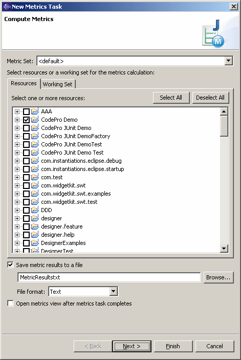

Schedule Compute Metrics To schedule a mectrics report to be run at a specified time, open the scheduler view, right click to access the popup menu, select the "New" submenu, and then select "Compute Metrics". The collection of resources or working set that should be examined may be selected. Once the metrics results have been collected, the results may either be displayed in the metrics view or written out to a report in a variety of formats including text, tab and comma delimited, HTML and XML. The results may also be grouped by audit rule or resource. Click the "Next >" button to schedule when the exit is to occur. |